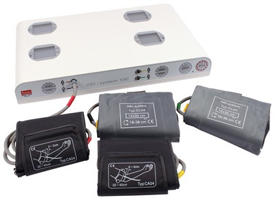
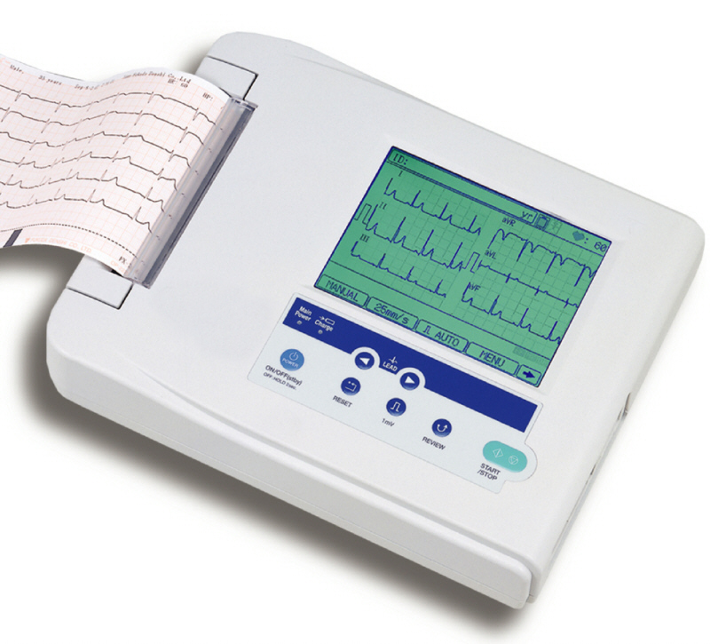
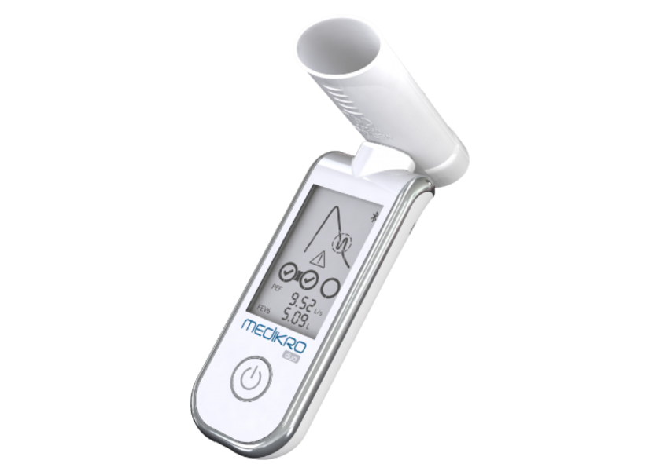
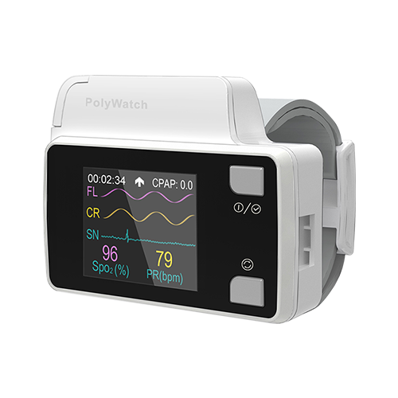

Špičkové technologie pro Vaši nejlepší péči
V naší lékařské ordinaci jsme hrdí na to, že můžeme našim pacientům nabídnout špičkové přístrojové vybavení, které nám umožňuje poskytovat vysoce kvalitní a přesnou zdravotní péči.


BOSO ABI 100
BOSO ABI 100 (měření kotníkových tlaků) je přístroj k včasné detekci ischemické choroby dolních končetin. Umožňuje současné měření krevního tlaku horních a dolních končetin manžetami. Rozdílné hodnoty na končetinách upozorňují na možnost zúžení tepen.
Přístroj využíváme jak screeningově, v rámci pravidelných kontrol diabetiků a rizikových hypertoniků, tak k vyloučení nemoci při bolestech dolních končetin.
EKG
Standardní 12 svodové EKG snímá elektrickou aktivitu srdce v čase pomocí elektrod umístěných na hrudi a končetinách. EKG provádíme k vyloučení poškození srdečního svalu jak u akutních obtíží, tak v rámci preventivních prohlídek.
U prevencí jej provádíme od 40 let ve 4-letých intervalech, u pacientů léčených s vysokým tlakem a cukrovkou v rámci dispenzarizace každý rok.
Plánovaně jej provádíme u pacientů přes operací.
Tlakový Holter
Tlakový Holter zaznamenává krevního tlak v určitých intervalech. Vyšetření se využívá k upřesnění diagnózy a k posouzení účinnosti léčby vysokého krevního tlaku. Přístroj se skládá z manžety tonometru, která se umístí na paži, a malého automatického tlakoměru, který je schován v pouzdře na opasku. Během vyšetření provozuje pacient své běžné činnosti.

Thermokauter
Thermokauter využíváme ke kauterizaci (pálení) tkáně
a cév během drobných chirurgických zákroků. Jedná se
jednoduchý přístroj s baterkou a vyměnitelnými
sterilizovatelnými čepelmi.
Slouží k odstranění kožních výrustků (tzv. fibromů).

Močový analyzátor URI TEX
URI TEX je přístroj k semikvantitativnímu vyhodnocení močových diagnostických proužků. Přístroj provádí kompletní močovou analýzu včetně přítomnosti albuminu a kreatininu v moči u diabetiků.
Výsledky jsou ihned z přístroje přeneseny do počítače.

Spirometr Medikro DUO
Spirometr v ambulanci využíváme k orientačnímu vyšetření plicních funkcí k vyloučení astmatu a ke screeningu chronické obstrukční plicní nemoci. Vyšetření využíváme jak u kuřáků, tak u pacientů s déle trvajícím nebo záchvatovitým kašlem. Software nám umožňuje zaznamenat výsledky vyšetření do počítačové dokumentace.
Poly Watch (minitoring spánkové apnoe)
Poly Watch je mobilní diagnostický přístroj na zápěstí pro monitoring spánkové apnoe z pohodlí domácího prostředí. Spánková apnoe je poměrně vážná porucha spánku, při které pacient během spánku špatně okysličuje tělo a následně se cítí unavený. Přístroj obsahuje prstové čidlo k monitoraci okysličení těla a nosní čidlo k monitoraci dechu.
STANDARD F200 POCT analyzátor
POCT (point of care testing) metodami vyhodnocujeme vzorky (nejčastěji krve, stolice, stěr z hrdla) bez nutnosti odeslání do laboratoře. Lékař má k dispozici výsledek do několika minut. V naší ambulanci využíváme POCT analyzátory v následujících měřeních:
- vyšetření CRP – vzorek kapilární krve, hodnota výsledku nám hrubě odlišuje bakteriální a virové infekce
- vyšetření glykovaného hemoglobinu – kapka krve, stanovení dlouhodobého cukru využíváme při sledování diabetiků
- vyšetření TOKS - moderní imunochemický test umožňuje kvantitativně hodnotit přítomnost krve ve stolici, které je součástí screeningu rakoviny tlustého střeva
- Streptest – jde o vyšetření streptokokového antigenu (streptokoky A) ze vzorku získaného výtěrem z krku
- vyšetření D-dimerů – využíváme k vyloučení některých onemocnění spojených se srážením krve (hluboká žilní trombóza, plicní embolie)
- vyšetření troponinu - koncentrace troponinu v krvi se zvyšuje při postižení srdečního svalu a výsledek nám slouží zejména při bolestech na hrudi k vyloučení srdečního infarktu
- vyšetření proBNP - marker srdečního selhávání provádíme u pacientů s dušností